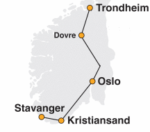

<aside class="sidebar">
  <div class="container">
    <div class="text_container">
      <h4>Nettbestilling inntil 1 time før planlagt avgangstid fra aktuell holdeplass</h4><br>
      <p>Lavprisekspressen er billigst og har høyest komfort på strekningen mellom Oslo - Kristiansand, Oslo - Trondheim og Oslo - Stavanger</p><br>
      <p>Lavprisekspressen er Norges og Europas første lavpris-busstilbud med bestilling og betaling over nett. Prisene vil variere fra Kr 99,- og oppover, alt etter hvor tidlig ute du er med din bestilling og ledig antall plasser i bussene.</p><br>
      <p>Lavprisekspressen kjører strekningene:</p>
    </div>
    <div class="image_container">
      
    </div>
    <br>
    <div class="text_container">
      <a href="https://www.facebook.com/lavprisekspressen/">Har du besøkt vår Facebook side?</a><br>
      <a href="https://www.vg.no/reise/i/0EBKP6/buss-er-bedre-enn-toget">Les den store testen i VG her</a><br>
    </div>
  </div>
</aside>
